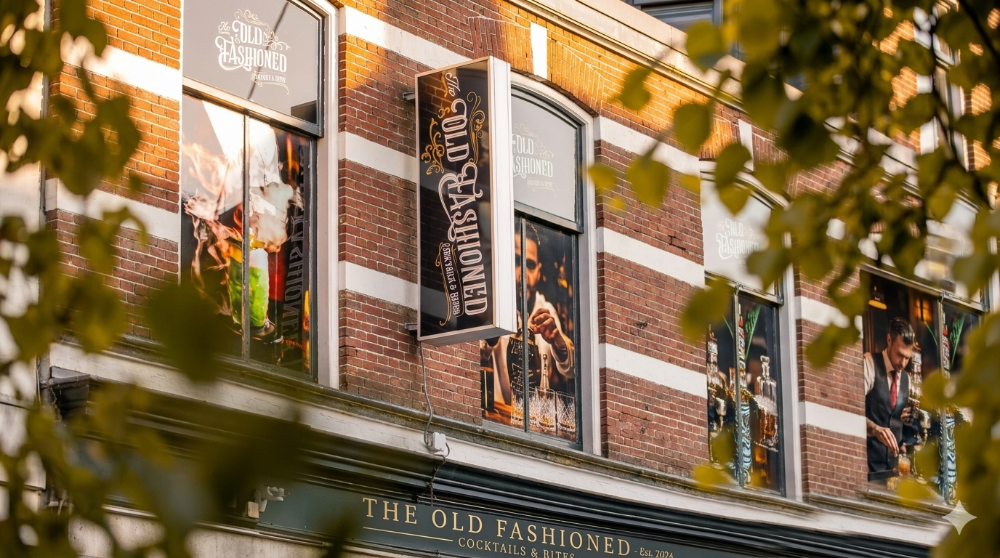
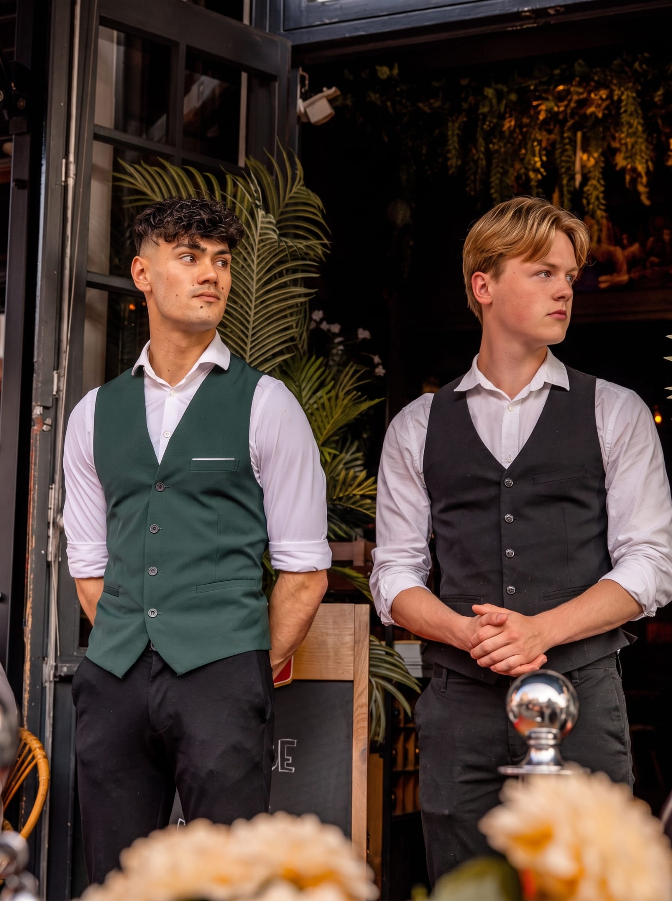
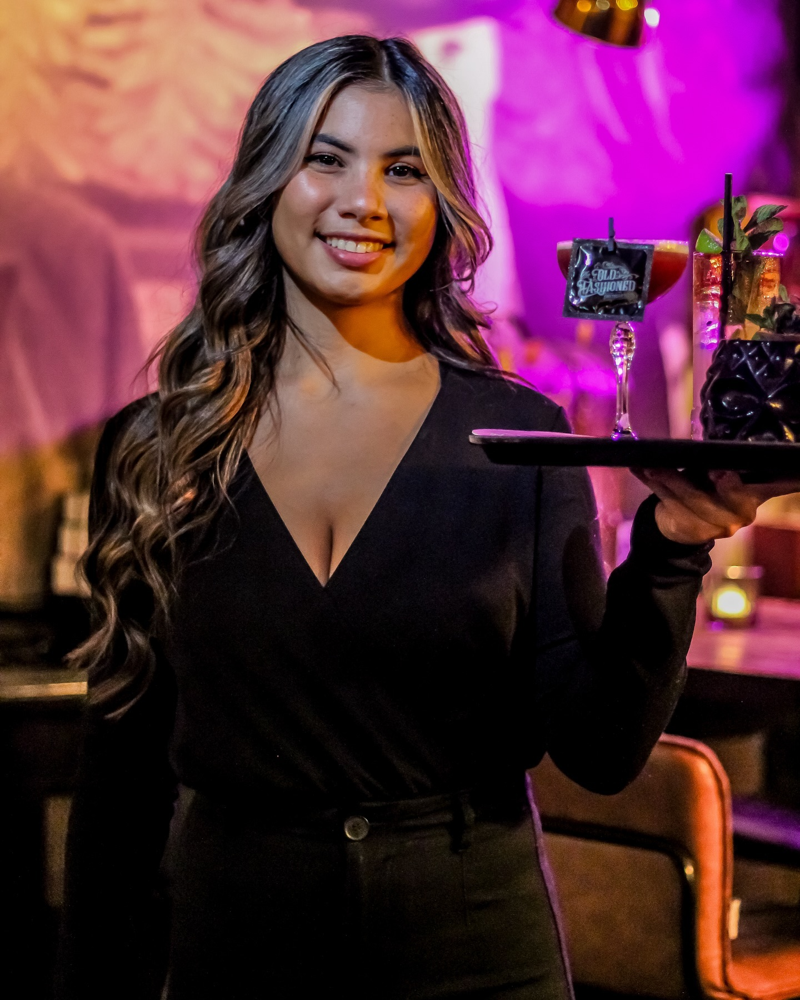
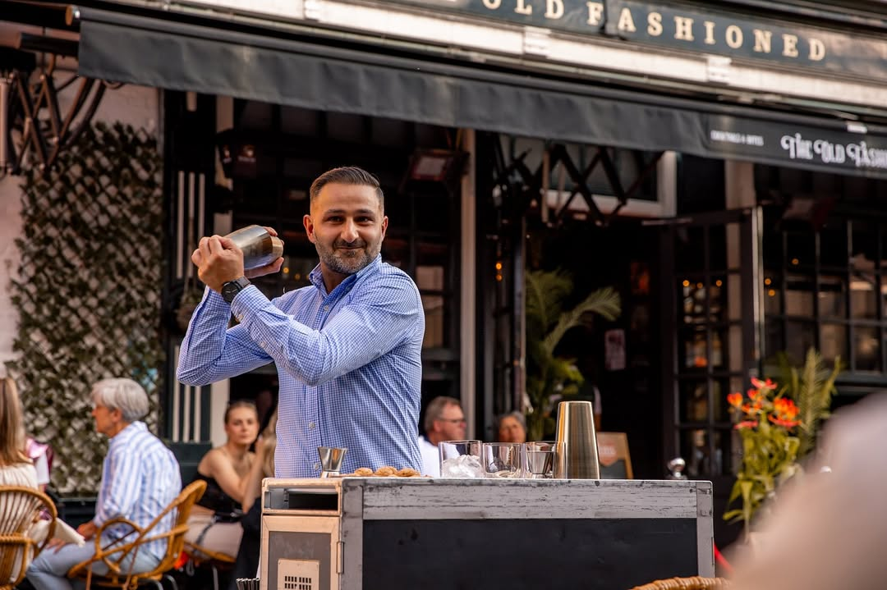
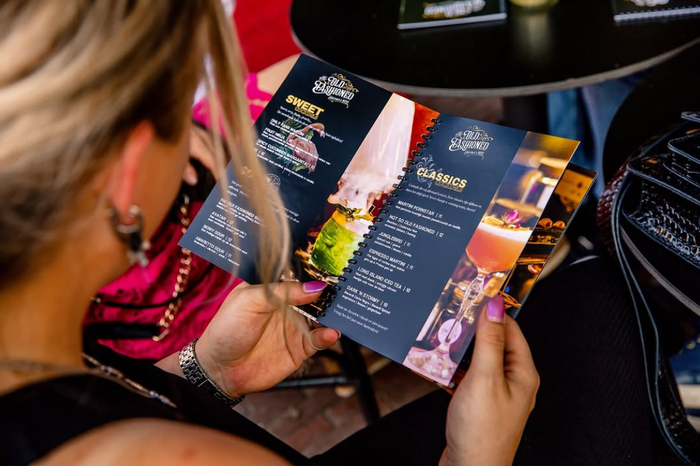

Cocktailbar Rijssen
The Old Fashioned
Premium cocktails, bijzondere workshops en bartending op locatie — in het hart van Rijssen.
Over The Old Fashioned
Cocktails met vakmanschap
The Old Fashioned is een cocktailbar in het centrum van Rijssen. Een historisch pand, een moderne kaart. Van signature cocktails tot workshops en bartending op jouw feest: alles maken we met de hand.


Bartending op locatie
Wij verzorgen de complete ervaring
Wij nemen de bar mee. Onze bartenders komen met shakers, ijs, glaswerk en verse ingredienten naar jouw locatie, en werken met dezelfde huisgemaakte siropen en signature recepten als in de bar in Rijssen.
Vooraf stellen we een cocktailkaart samen die past bij het gezelschap, van klassiekers tot creaties met rook en vuur. Op de dag zelf bouwen we op, schenken we, en ruimen we achteraf alles weer op.
Meer informatieSamen cocktails maken
Workshops in de Bar
Je staat achter onze bar, met een bartender naast je. Twee cocktails maak je zelf: shaken, proeven, bijstellen tot het klopt. Daarna drink je ze op.
Vanaf vier personen, en er hoort eten bij: een hapjesplank naast je shaker, of een streetfood plateau als je er langer voor gaat zitten. Wij zorgen voor de rest.
Meer over de workshops

Cocktail Experience
Workshop
Op Locatie
Wij komen naar jou toe. Onze bartender neemt shakers, ijs, glaswerk en verse ingrediënten mee, en bouwt een bar op waar jij wilt: thuis, op kantoor of in een zaal.
Je maakt twee cocktails onder begeleiding, shots inbegrepen. Drinkt er iemand niet? Die maakt dezelfde cocktails alcoholvrij.
Meer over workshops op locatieKom langs
Openingstijden
Adres
Grotestraat 12
7461 KG Rijssen
